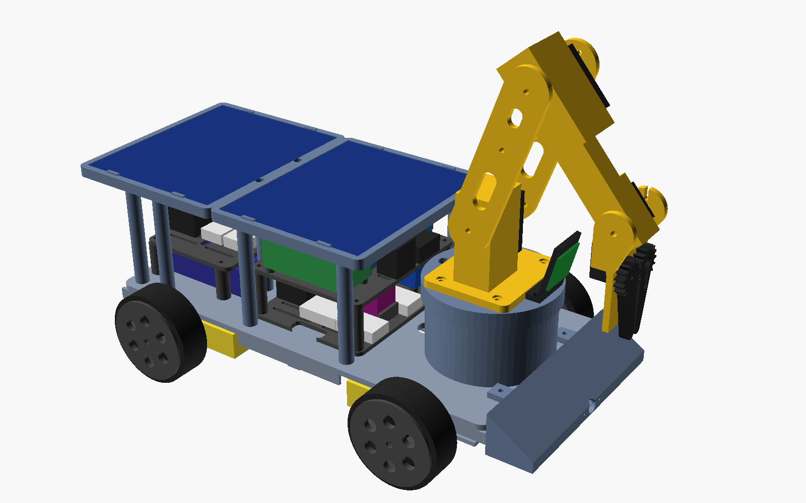
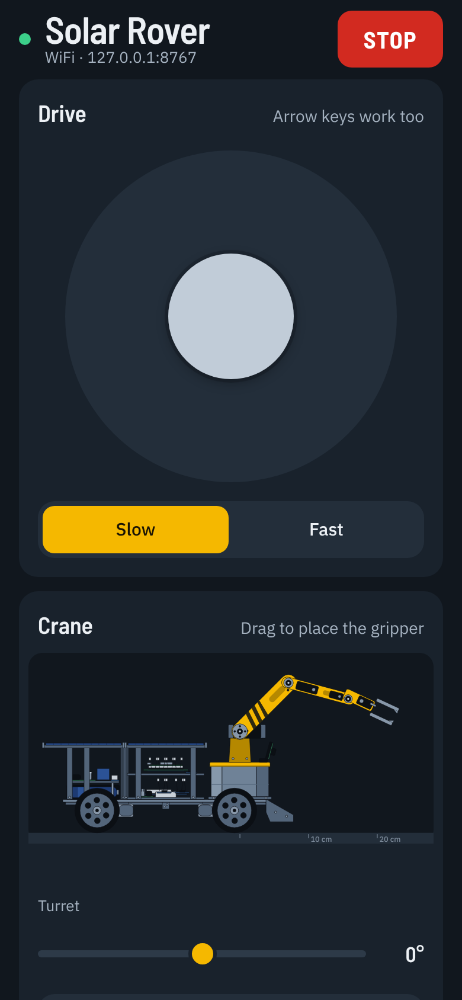
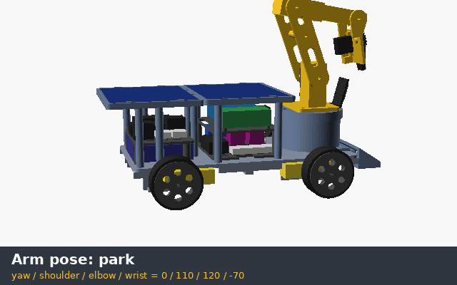
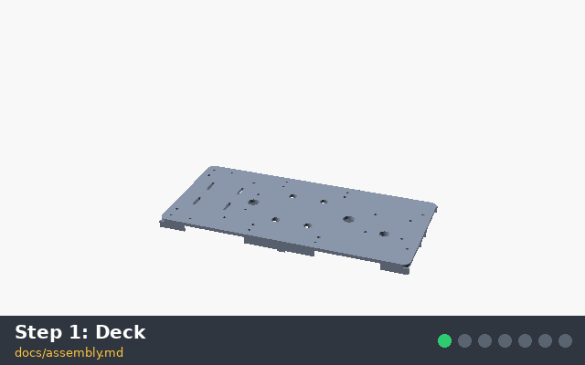

A solar rover with a crane on its back.
Solar Rover is a 3D-printed, four-wheel-drive robot car that charges itself in the sun and picks things up with a four-joint arm. Drive it from a handheld remote or your phone, or hand it to a reinforcement learning agent that learned to drive in a simulator.
Try the crane
Drag anywhere to move the gripper. Close it over the ball to pick it up.
- Shoulder
- 45°
- Elbow
- 60°
- Wrist
- −10°
- Gripper
- 60%
A * 45 60 -10 60On paper
- Printed parts
- 31, all on a 220 × 220 mm bed
- Screws
- M3 into heat-set inserts, M2.5 and M2 for small boards
- Battery
- 44 Wh, four 18650 cells
- Solar
- Two 6 V 2 W panels, about 12 Wh on a sunny day
- Arm
- Four joints and a gripper, lifts about 50 g
- Brains
- ESP32 for driving, Raspberry Pi Zero 2 W for the agent
- Circuit boards to design
- None. Off-the-shelf modules only
- Parts cost
- About $221, or $252 with the remote

What's where
Everything rides on one 300 mm deck: power low down at the back, the electronics stacked in the middle, and the crane up front where it can see what it's reaching for. The drawing is the same one as the crane above, with the numbered parts called out.
- Solar roof. Two 6 V 2 W panels on 75 mm posts, high enough to leave room for the plugged-in jumpers underneath.
- Battery and charger. Four 18650 cells (44 Wh) on the deck, with the MPPT charger, the relay that stops charging when the pack is too hot or cold, and a current sensor on the tray above.
- Gear motors. One yellow TT motor per wheel, each with a 20-slot encoder disc, about 5 mm of travel per count.
- Power tray. The two motor drivers, the 16-channel servo board, the buck converters and the lever connectors that join it all up.
- Logic tray. The ESP32 on its screw-terminal board, the IMU (inertial measurement unit), and the Raspberry Pi Zero 2 W that runs the agent.
- Turret. The yaw servo hangs inside and turns everything above it, up to 90° either way.
- Camera. A small Pi camera, tilted on its own mount, for the optional camera-based pick-up.
It looks after its own battery.
Two panels on the roof feed one MPPT (maximum power point tracking) charger, and a 12 V wall adapter plugs into the same charger when the sun isn't enough. A temperature probe on the pack stops charging outside 0 to 45 °C, because a car parked in the sun gets hot.
The interesting part is what it does when the battery runs down. The panel's own power reading doubles as a light sensor, so the car can go looking for a sunny spot by itself.
- Below 30%
- Drops whatever it was doing and goes looking for sun.
- Below 15%
- Parks, folds the arm, shuts the Pi down and sleeps while it charges.
- Back at 60%
- Wakes everything up and carries on.
Four ways to drive it.
- A handheld remote you print yourself, talking ESP-NOW, a radio link that needs no router, and switching to LoRa when you drive out of range (1–3 km).
- Your phone, over WiFi. The car makes its own network and serves the app itself, so there's nothing to install.
- Your phone, over Bluetooth Low Energy, from Chrome on Android or the Bluefruit Connect app.
- The agent on the Raspberry Pi, or on a PC over WiFi.
In Auto mode the agent drives and you can grab the stick at any time. Your input wins for two seconds, then the agent gets the wheel back. If whoever is driving goes quiet for 300 ms, the motors stop.

It learned to drive in a simulator.
The simulator is a quick 2D (two-dimensional) model of the car with its real size, speed limits, wheel slip and noisy sensors. An Evolution Strategies trainer, numpy only, runs it on any PC and produces a small neural network that reads the goal direction, wheel speeds, gyro, front distance, light and battery, and outputs throttle and steering ten times a second.
The policy in the repo reached its goal in 22 of 30 test runs. The honest bit: for finding sun, a simple scripted search still beats it, so that's what the car uses by default.

Build it.
Order the parts
Modules, motors, servos, cells, panels and screws, all in the bill of materials.
Print a fit test
A wheel, an encoder disc, a motor clamp and a roof post. Measure your parts against the MEASURE values in
config.scadbefore printing the rest.Print everything
31 parts in PETG (a tough, easy plastic), tires in TPU (a flexible one).
Assemble and wire
Chassis, power, brains, then the turret and arm. Every wire has a pin-by-pin table in wiring.md.
Flash and drive
One command flashes the car. Join its WiFi and open the app.

